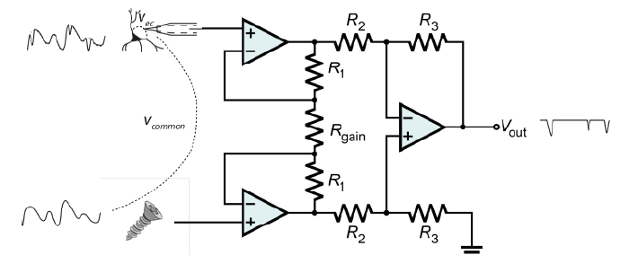
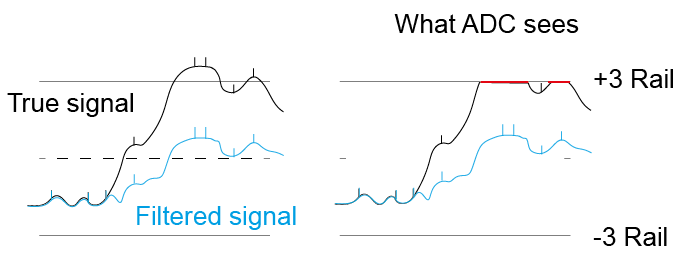
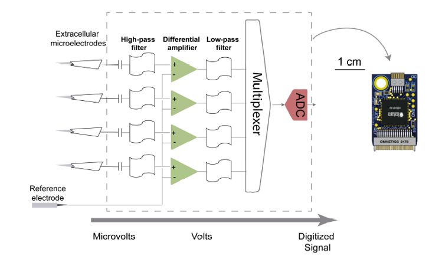
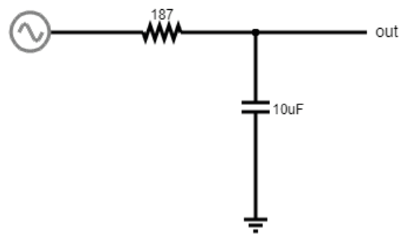

Theory Day 3¶
Last time, we saw that an instrumentation amplifier should be pretty good at creating a proper differential signal, even if it is riding on top of a pretty large ‘noise’ signal. Today we will go over filters, put an instrumentation amplifier circuit together, and record some EMG signals.

Instrumentation amplifiers¶
Why do we need Instrumentation Amps?¶
Let’s quickly revisit why we can’t just use 1 operational amplifier to get a nice signal.

To make this circuit differential, we need voltage dividers. But, these are connecting our fragile signal to ground! Plus, remember how any mismatch in the input impedances between ‘+’ and ‘-’ messes up the signal if there is a lot of common mode noise? In practical terms, there is always going to be a mismatch between these resistors; they simply cannot be produced in a way that makes them exactly equal. Why? Because this resistor is also your electrode. If you work with electrodes, have you measured their impedances? How similar are they? If you made these resistors as different as your electrodes are variable, this circuit will not work to eliminate common mode noise and amplify our spikes.
The solution is to use three op-amps:
{kind=link}
Here it is in the simulator:

Common mode rejection ratio (CMMR)¶
When the input impedances of the differential amplifier weren’t matched, part of the input signal that was common to both inputs, and thus should be cancelled out, actually appeared in the output. A common way to model how well an amplifier subtracts one input to the other is the following: We define each input (+ and -) to be a sum of an individual voltage (V1 or V2) plus a voltage common to both. In our arms, or the brain of an animal, this common voltage (Vc) could be electrical noise or muscle activity we are not interested in and want to discard. In this case, the inputs would be:
(In our earlier examples of a differential amplifier, V2 was ground 0V, which is a perfectly valid value). In an ideal differential amplifier, the output should be the difference of both amplified by a factor:
Where Ad is the differential gain, the factor by which the differential signal is amplified. Here, the unwanted, common signals cancel out and only the signal we are interested in is amplified.
A real amplifier, however, acts in a different way. As we’ve seen, small imperfections can lead to part of the common voltages being amplified as well. In this case, the output of a real amplifier ends up being:
In addition to the differential gain, a new term ‘Ac’, or common gain, appears. This amplifies the signal common to both inputs. Of course, we want an amplifier to have a differential gain as high as possible and a common gain as low as possible (ideally, Ac would be 0). The relation between these two gains tells us how good an amplifier is at amplifying only the differential signals. This is called the Common Mode Rejection Ratio, or CMRR, simply defined as
or
if measured in decibels.
The higher the CMRR, the better the amplifier is at cancelling out the signals common to both inputs. Instrumentation amplifiers are not completely immune to common input noise. They are real circuits and, as such, there are multiple ways for these common signals to bleed out into the output. They have, however, a very high CMRR. Comparing the two devices we’ve been using, the operational amplifier LM358 has a CMRR of 80dB while the instrumentation amplifier has a CMRR of 120dB, 100 times higher! (Sounds underwhelming? Remember decibels are logarithmic; the difference between 80 and 120 dB in terms of sound is the difference between a toilet flushing and a jet engine).
Low and High pass filtering¶
Filters are used to remove certain frequencies from our data. We can do this in hardware or in software. Usually hardware filtering (implemented in the amplifier circuit) is used to increase (apparent) signal to noise ratio by rejecting unwanted frequencies and to prevent signal aliasing (e.g., bandpass between 0.5 and 2 kHz). Remember the exercise where we measured the voltage across our fingers with the oscilloscope, and saw very high values. Even with a differential amplifier, we usually have a decent amount of slow (~<10Hz or so) voltages that are simply too big for the amplifier or ADC (analog to digital converter). Any voltages above or below the amplifier rails (or above/below the input range of the digitizer) will be ‘clipped’ and all we’ll see is a constant value. The solution is to remove the large amplitude slow components, so we can fit the lower amplitude, faster, interesting components into our dynamic range.
Therefore, high-pass filters first remove the large DC offsets present at the electrode-extracellular interface, along with any undesired low-frequency signals (e.g., movement artefacts). Additionally, low-pass filters must be configured to less than half of the ADC frequency sampling rate (Nyquist limit) to prevent aliasing, and may also be used to block undesired high-frequency signals and artefacts. For instance, if our sampling frequency is 30 kHz, the low pass filter should be ~15 kHz. Below is an example of the Intan headstage circuit.
Low-pass filters¶
These filters block high frequencies. This is basically another voltage divider, with a frequency-dependent component. You’ve already seen one of these when you charged/discharged a capacitor! The exponential decay of the capacitor gets convolved with our signal. Remember that the impedance of our capacitor decreases as the signal frequency increases. At low frequencies, the high impedance of the capacitor means we get a large voltage drop over the capacitor, and more of our input signal can reach our Vout.
High-pass filters¶
This is the same idea. With increasing signal frequency, the impedance of the capacitor decreases (day 1), reducing the voltage drop over the capacitor and sending more signal to the output.

These are called ‘RC filters’ because they’re built from a resistor (R) and a capacitor (C). Because there’s only one of each, we call them ‘single pole’. In real life, filters are built from more than one pair in order to get specific characteristics. This goes beyond the scope of this course but there are entire classes on this topic.
Why do we need a ground electrode?¶
When we build our EMG circuit, we will use three electrodes: measurement (+), reference (-), and ground. Why do we have a ground electrode when we already have ‘+’ and ‘-’ inputs? This is a bit tricky, and there’s multiple ways to understand it.
First off, remember the common mode rejection ratio. If our amplifier is good at rejecting 99.99% of the common mode, but 0.01% make it through, in the range of volts, this could still be enough to prevent us from resolving microvolt spikes. As a more concrete way to think about it regarding the circuit: imagine you just walked across a carpet and you’re charged to 10kV. Now you want to do a differential measurement of EMG (or EEG). In theory, as far as we’ve really talked about till now, this should work via the magic of common-mode rejection. However, remember the circuit that is inside the instrumentation amp:
The ‘-’ inputs of the two input op-amps are connected to ground, via a bunch of resistors. If you are charged to 10kV compared to ground, we’re asking these op-amps to deal with pretty high values individually, and they will saturate. Even if here we did not include rails in the simulation, remember that each op-amp can only go as high or low as its voltage rails (3V in our case, so with a 100x gain, a 0.03V input saturates the amplifier).
One way to think about it is that we first bring our body to a reasonable voltage level - for example the voltage that our computer considers ground. Or the ground in the wall power sockets. Once we’ve done that, our entire body is not floating at 10kV anymore but at, for us, 0V. The remaining fluctuations, so stuff we consider noise and want to remove via our differential measurement, is not as big anymore. We will still have residual 50 or 60Hz noise from the mains supply, plus other muscles, electrostatic charge, bodies moving through the fields in the room and so on, but these can all be handled by the amplifier.
The last, related, issue is that the output of the whole thing is relative to ground. At some point you want to connect this to a PC, which sits at ground level. A possible solution of course is if we make the entire thing battery powered - this is actually a great idea in our exercises, if you have a laptop.
Practically, all this means that we want to ground our subjects as well as possible. For tetrode recordings in mice, we use a large ‘ground screw’ with low impedance to ground, so that we can effectively discharge the mouse.
One more detail: ground is not (always) earth, in many cases it is just a certain circuit we treat as 0. That circuit can have noise on it, just like any other circuit. If the ground has a lot of 50/60Hz noise, we’ll be charging and discharging the animal (any animal is also a capacitor) constantly through the ground connection. If the ground screw/electrode is low enough impedance and close to our recording site, we’ll manage to keep the animal’s voltage equal to the changing GND level and we won’t notice this noise. However, if we put the ground screw/electrode too far away from where we record, e.g. we put the ground connection on the tail (extreme example), then the head of the animal won’t be sufficiently charged/discharged and we’ll encounter what will look like 50/60Hz noise in our tetrode recordings.
Acknowledgements¶
Written by:
Alexandra Leighton
Joana Neto
Jakob Voigts
Aarón Cuevas López
Jon Newman
With material from:
Joana Neto, 2018; Materials and neuroscience: validating tools for large-scale, high-density neural recording, 2018.
Jon Newman and Jakob Voigts, 2017; Intro to Chronic Ephys (presentation at TENSS)
Mitra Javadzadeh, 2017; Building an analog ephys recording system (practical exercises developed for TENSS)
Circuit Simulator version 2.4.6js. Original by Paul Falstad, JavaScript conversion by Iain Sharp
Licensing¶
This work is licensed under CC BY-SA 4.0.
To view a copy of this license, visit https://creativecommons.org/licenses/by-sa/4.0/